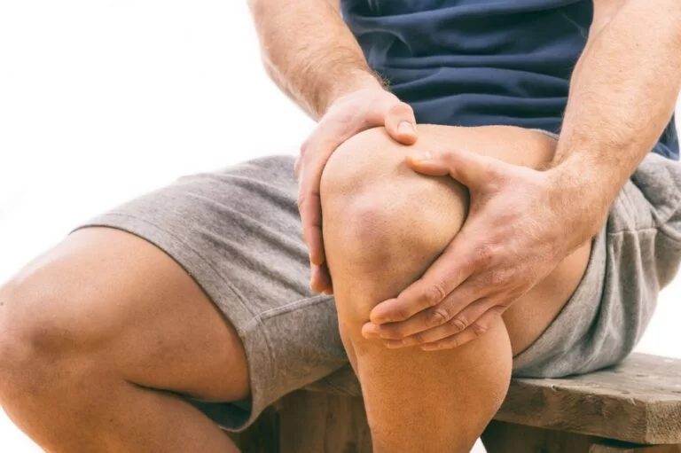

Echinacea: Echinacea is believed to help boost the immune system and reduce the severity and duration of cold symptoms.
Peppermint Tea: Peppermint tea can help soothe a sore throat and relieve congestion.
Elderberry: Elderberry extract is known for its antiviral properties and may help with cold symptoms.
Do's:
Rest: Give your body time to recover by getting adequate rest and sleep.
Stay Hydrated: Drink plenty of fluids, such as water, herbal teas, and clear broths, to stay hydrated.
Use Humidifiers: Use a humidifier in your room to keep the air moist and soothe throat irritation.
Dont's:
Avoid Smoking: Avoid smoking and exposure to secondhand smoke, as it can worsen cold symptoms.
Limit Alcohol: Reduce alcohol consumption, as it can dehydrate your body and weaken the immune system.
Avoid Sugary Foods: Minimize the intake of sugary foods and beverages that can suppress the immune system.
Eating Habits
Warm Soups and Broths: Include warm soups and broths in your diet to soothe a sore throat and provide nutrients.
Vitamin C-Rich Foods: Consume foods high in vitamin C, such as citrus fruits, to boost your immune system.
Garlic and Ginger: Incorporate garlic and ginger into your meals for their immune-boosting properties.
Exercises
Light Physical Activity: Engage in light physical activity like short walks to improve blood circulation.
Deep Breathing: Practice deep breathing exercises to help clear nasal passages and reduce congestion.
Rest and Recovery: Prioritize rest and recovery to allow your body to heal faster.
Knee Pain

Herbal Remedies:
Turmeric: Turmeric contains curcumin, which has anti-inflammatory properties and may help reduce pain and inflammation.
Ginger: Ginger has natural anti-inflammatory properties and can be beneficial for managing pain.
Boswellia: Boswellia supplements may help reduce joint pain and inflammation.
Do's:
Rest: Give your knee time to heal by avoiding excessive strain
Ice: Apply ice packs to the affected area to reduce swelling and inflammation
Compression: Consider using a knee brace or compression bandage for support.
Elevate: Elevate your leg to reduce swelling, especially when resting
Dont's:
Avoid High-Impact Activities: Stay away from activities that put excessive stress on your knees, such as running on hard surfaces.
Limit Prolonged Sitting: Try not to sit in one position for too long; change your position periodically.n
Avoid High Heels: Choose comfortable and supportive footwear, avoiding high heels or shoes with inadequate arch support.
Don't Ignore Pain: If the pain persists, seek medical advice rather than trying to push through it.
Eating Habits
Anti-Inflammatory Foods: Include foods like fatty fish (salmon, mackerel), turmeric, and ginger in your diet, as they have anti-inflammatory properties.
Calcium and Vitamin D: Consume dairy products, leafy greens, and fortified foods to support bone health.
Stay Hydrated: Drink plenty of water to keep your joints lubricated.
Exercises
Opt for activities like swimming, stationary cycling, or gentle yoga to improve knee mobility without excessive strain.
Work on strengthening the muscles around the knee, including leg lifts and squats (with proper form).
Include gentle stretching exercises to maintain flexibility in the knee joint.
Migraine Headache
Herbal Remedies:
Butterbur: Butterbur supplements may help reduce the frequency and severity of migraines.
Feverfew: Feverfew is an herbal remedy that some people find helpful in preventing migraines.
Peppermint Oil: Peppermint oil applied to the temples may provide relief from migraine pain.
Do's:
Rest in a Dark Room: Find a quiet, dark room to rest in during a migraine attack.
Stay Hydrated: Dehydration can trigger migraines, so drink plenty of water.
Manage Stress: Practice relaxation techniques like deep breathing and meditation to reduce stress, a common trigger for migraines.
Keep a Diary: Maintain a headache diary to identify triggers and patterns.
Dont's:
Avoid Triggers: Identify and avoid foods, beverages, or situations that trigger your migraines.
Limit Caffeine: High caffeine intake can trigger migraines in some individuals, so moderate your caffeine consumption.
Don't Skip Meals: Skipping meals can lead to low blood sugar, which may trigger a migraine.
Eating Habits
Balanced Diet: Consume a balanced diet with regular meals to maintain stable blood sugar levels.
Avoid Trigger Foods: Identify and avoid foods that trigger your migraines, such as aged cheese, processed meats, and artificial sweeteners.
Exercises
Low-Impact Exercise: Gentle exercises like walking or swimming can help with overall health and may reduce the frequency of migraines.
Regular Physical Activity: Establish a consistent exercise routine to reduce stress and improve overall well-being.